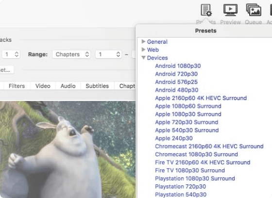
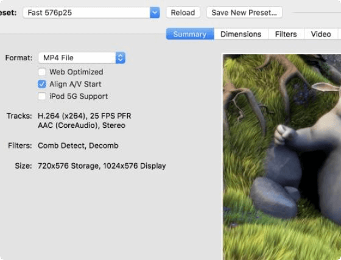

Handbrake
The open source video transcoder
HandBrake is a tool for converting video from nearly any format to a selection of modern, widely supported codecs
Download for Free.png)
Just a few reason you will love HandBrake

Optimised for easy use
Built-in Device Presets
Get started with HandBrake in seconds by choosing a profile optimised for your device, or choose a universal profile for standard or high quality conversions. Simple, easy, fast. For those that want more choice, tweak many basic and advanced options to improve your encodes.
Modern video formats
Supported Input Sources
Handbrake can process most common multimedia files and any DVD or BluRay sources that do not contain any kind of copy protection.
Outputs
-
 File Containers: .MP4(.M4V) and .MKV
File Containers: .MP4(.M4V) and .MKV
-
Video Encoders: H.265 (x265 and QuickSync), H.264(x264 and
QuickSync), H.265 MPEG-4 and MPEG-2, VP8, VP9 and Theora
-
Audio Encoders: AAC / HE-AAC, MP3, Flac, AC3, or Vorbis
-
Audio Pass-thru: AC-3, E-AC3, DTS, DTS-HD, TrueHD, AAC and MP3
tracks

With you in mind
Even more features for you
-
Title /
chapter and range selection
-
Title /
chapter and range selection
-
Title /
chapter and range selection
-
Support
for VFR and CFR
-
Chapter Markers
-
Subtitles (VobSub, Closed Captions CEA-608, SSA, SRT)
-
Constant Quality or Average Bitrate Video Encoding
-
Video
Filters: Deinterlacing, Decomb, Denoise, Detelecine, Deblock,
Grayscale, Cropping and scaling